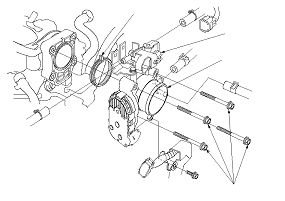

Throttle Body Removal/Installation
Do not insert your fingers into installed throttle body when you turn the ignition switch ON (II) or while the ignition switch is ON (II). Otherwise, you will have serious injury to your fingers if the throttle valve was activated.
NOTE: Do the ETCS learn procedure after the throttle body replaced.
